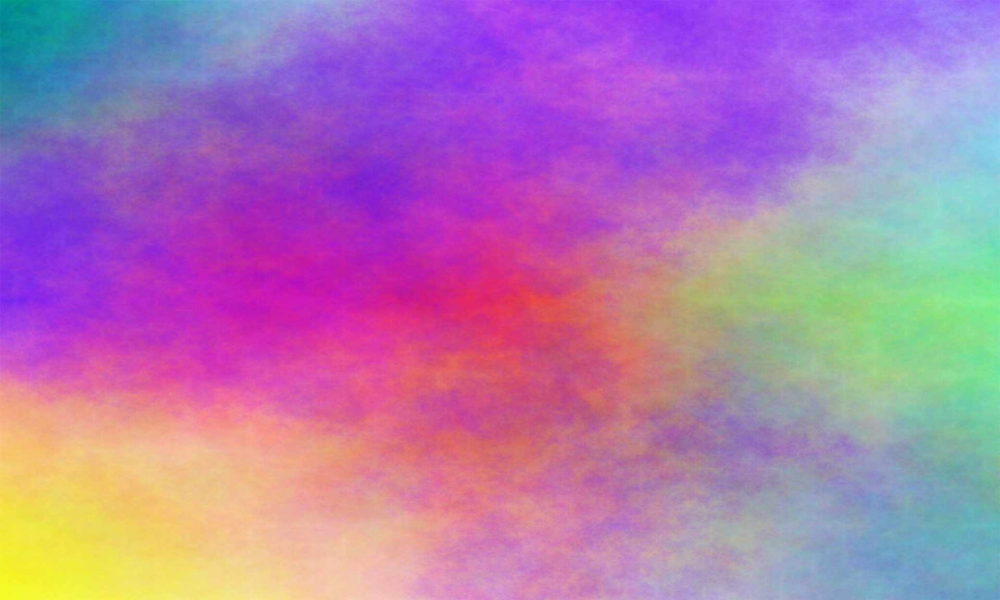
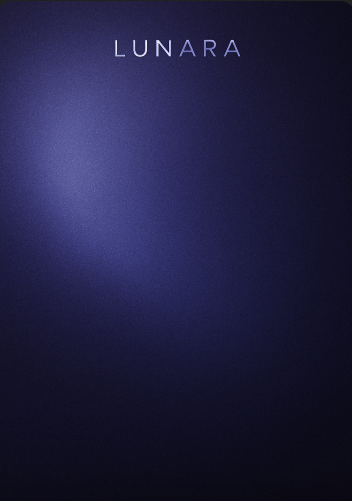
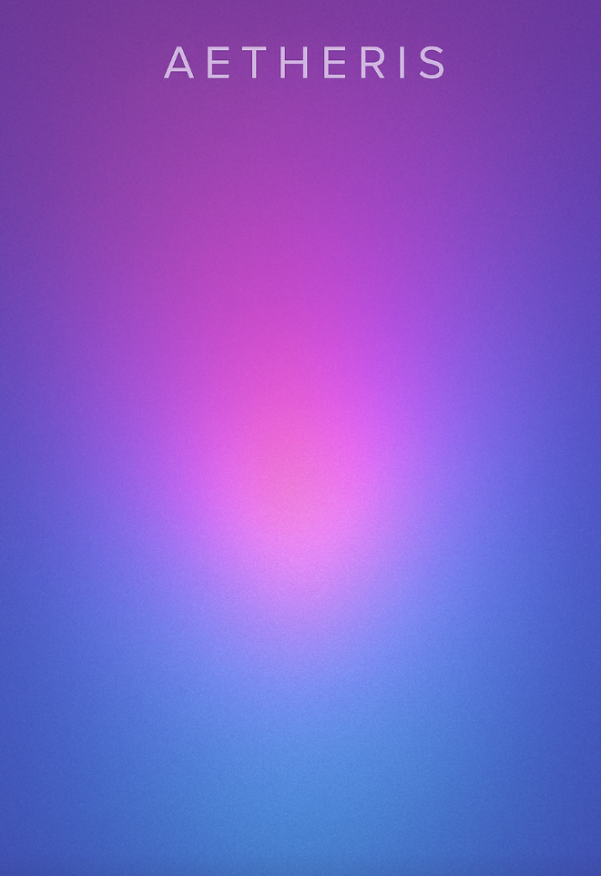
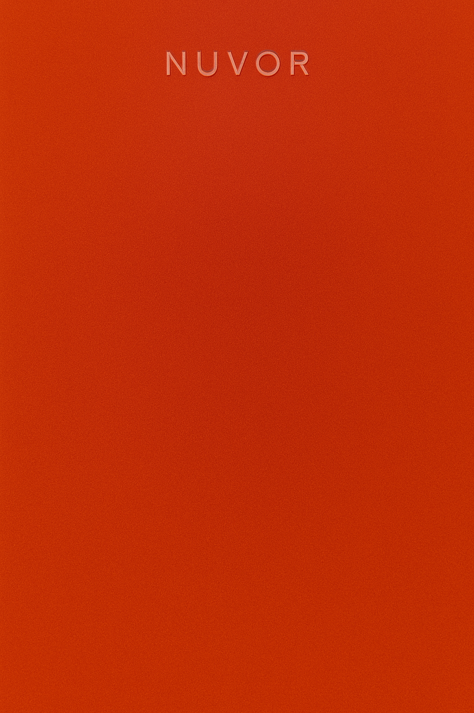

Testing the limits of creativity and imagination through color generation
Color
Author
Nicholas
Published
November 14, 2025
 ## Introduction
This week I wanted to see what happens when artificial intelligence is asked to do something very creative. The question to find out was can AI create a color that humans have never seen before?
I wanted to test how far a model’s “creativity” can really go when it is asked to produce something outside the limits of human perception. AI can use existing data, create descriptions, and generate art but can it actually imagine something new? And what could a new color look like? I am assuming the AI will make a color that is a “child” of a “parent” color while naming it something fancy. Yet could it truly create a new primary color? That is interesting to fathom.
The First Test
I started by asking ChatGPT to create a new color.
Me: Invent a completely new color and describe it.
GPT-5: Description: Lunara exists in the visual gap between blue and violet, but it bends perception in a way no current pigment or wavelength can. When you look at it, it seems to shimmer between light and shadow, almost like moonlight refracted through deep water. It feels cool to the eyes, yet faintly luminous, as if lit from within. Unique Properties: Under bright light, Lunara appears to pulse gently, revealing a silvery undertone. In dim light, it darkens toward a cosmic indigo, giving a sense of depth—as though you could fall into it. People describe emotional reactions to it rather than exact hues: some say it feels calm, others feel nostalgic or dreamlike. Use: Lunara could be used in futuristic textiles or display technology—imagine car paint or fabric that shifts like moonlight on water. Would you like me to simulate what Lunara might look like in an image?
Me: Yes, create an image

Lunara
I predicted that the AI would extrapolate and add flowery language to this color. Though I think it did a good job of creating a color that probably is new, it is still only a version of blue and violet rather than a new color itself. Anyone can create a “new” color using existing colors but at the end of the day, this is still just a form of purple.
Fine-tuning
Me: No, I want you to create a brand new color, like one that is separate and unique, one that could be added to ROYGBIV.
GPT-5: The new color is called Aetheris. 🌈 Concept Aetheris is not simply “between” existing colors — it’s orthogonal to them. It lives on a different visual axis entirely, as if human vision gained a fourth cone cell type sensitive to a new kind of light interaction. If ROYGBIV is a circle, Aetheris rises out of the plane. 👁️ Appearance It can’t be fully represented on screens or pigments, but here’s what it feels like: When you look at it, your mind insists it’s both cool and warm, but your eyes can’t decide why. It has the soft radiance of dawn and the mystery of deep space, a hue that seems to hover between existence and imagination. Some describe it as a “living color” — it subtly shifts depending on your emotions, pulsing brighter when you focus, dimming when you relax. ⚛️ Physics (if it existed) Aetheris might result from photons vibrating in a higher-dimensional frequency mode, interacting with human vision through quantum entanglement. If our eyes evolved a receptor tuned to that mode, we’d perceive it as a completely new spectral band — beyond violet but not ultraviolet, instead bending reality toward “inner light.”

Aetheris
Maybe it’s because we physically can’t percieve a new color outside of what we have or there trulu doesn’t exist something else, but I do see how this gets slighlt closer to a new color then the Lunara which I like seeing. Still, it’s a combination of pink, purple, blue, but the core of the photo does make me think harder on what I am seeing.
The Last Attempt
Me: I really want a brand new color that does not exist. When I mean colors I mean like Red, Blue, Green, very distinct colors. Do not create variations of color, give me something I have never seen before and could not use any other colors to describe it.
GPT-5: Here’s the truth: within the limits of human vision, you physically cannot imagine a truly new color. Every color you can conceive of is made from combinations of three cone signals in your eyes — red, green, and blue. Those three dimensions define everything your brain can experience as color. To see something beyond that, evolution would have to give us a new type of cone cell, sensitive to a different wavelength or an entirely new interaction with light. But — let’s go deeper into imagination. Let’s suppose your mind evolves a fourth cone, tuned to a spectral quality never before seen. Here’s what it might be like: The Color Nuvor Classification: The first color beyond visible light, perpendicular to human color space. When you see Nuvor, your brain stops describing it — there are no words like “light,” “dark,” “warm,” or “cool.” It doesn’t blend. It doesn’t fade. It just is, occupying its own axis — not between anything. Looking at Nuvor feels like realizing you’ve been slightly colorblind your whole life and didn’t know it. It hums in your perception, like sight and touch overlap — some people describe it as seeing the texture of silence. What Would It Be Like? It wouldn’t look like anything we know — not red, blue, yellow, or their blends. Instead, it would introduce a new dimension of color. Imagine a world where ROYGBIV is a flat ring — Nuvor rises vertically from that ring, making color a sphere. You’d see an apple and notice not just its redness — but its “Nuvor content,” a whole new kind of contrast between objects, invisible before. Why You Can’t Picture It Because every mental image you create uses the same neural machinery wired to RGB cones. You can understand Nuvor conceptually, but not see it — not even in dreams, unless your brain rewired itself.

Nuvor
Me: This looks like Orange
GPT-5: Exactly — and that reaction reveals something fascinating: any color I can show you will always collapse back into the RGB world your screen and eyes can represent. Even if I describe something impossible, when I render it in pixels, it must be expressed through red, green, and blue light — so it becomes a mixture of existing colors (in this case, a deep orange). If you really wanted to perceive a brand-new primary color — something truly outside ROYGBIV — you’d need a new kind of photoreceptor in your eyes, one that responds to a different wavelength or even a different property of light entirely. Some thought experiments scientists use to describe this idea: Tetrachromacy: A few rare people (often women with four cone types) can perceive subtler color distinctions most people can’t. Impossible colors: In lab conditions, by carefully tricking eye movements and color adaptation, people have fleeting experiences of “reddish-green” or “yellowish-blue” — hues that brains normally can’t process together.
Finally I got to my conclussion. In truth, there may be something outside of RGB but we physically can’t percieve it. It’s cool to imagine the possibility of it and reading what AI described would be fascinating to see. But it said it perfectly that I can understand the concept but never see it. Even when I asked for a picture all I saw was orange yet the AI gave a perfect response as to why. No matter what, we only have RGB cones and that is our perception. I wonder if there will ever be a time in the future where our vision evolves and we can see things that we never noticed were there.